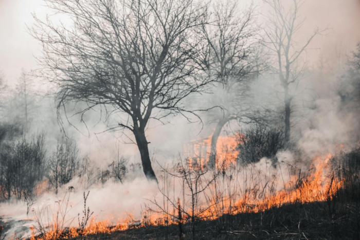

Contexto histórico e expansão territorial
O desmatamento no Brasil remonta ao período colonial, quando a Mata Atlântica foi a primeira vítima da exploração predatória para extração do pau-brasil e expansão da lavoura de cana-de-açúcar. Ao longo dos séculos, a pressão sobre os biomas brasileiros se intensificou com a expansão da pecuária, mineração, construção de infraestrutura e, mais recentemente, a agricultura mecanizada para monoculturas de exportação, como soja e milho.
A ocupação da Amazônia ganhou força na segunda metade do século XX, com projetos como a construção da rodovia Transamazônica (1972) e programas de incentivo à migração para o norte do país. Esses processos marcaram o início da conversão em larga escala da floresta em pastagens e áreas agrícolas.
Christiana Figueres, ex-secretária da Convenção-Quadro das Nações Unidas sobre Mudança do Clima, enfatizou:
O que está acontecendo na Amazônia não é apenas uma questão local. É um grito de alerta para o mundo inteiro. A floresta é um patrimônio da humanidade.
Biomas afetados pelo desmatamento
Cada bioma possui características únicas, mas todos enfrentam ameaças severas:
Amazônia
(Imagem da Amazônia pegando fogo)
Tamanho: A maior floresta tropical do mundo, cobrindo cerca de 5,5 milhões de km² no Brasil.
Importância global:
Armazena entre 100 e 200 bilhões de toneladas de carbono e regula padrões de chuva que afetam até o Cone Sul e outras partes do planeta. Taxas de desmatamento: Em 2021, a Amazônia perdeu cerca de 13.000 km² de floresta, apesar de reduções recentes.
Philip Fearnside, pesquisador do Instituto Nacional de Pesquisas da Amazônia (INPA), afirmou:
A destruição da Amazônia não se limita a emissões de carbono; ela também compromete a capacidade do bioma de regular o clima e as chuvas em vastas regiões.
Cerrado
(Imagem do Cerrado pegando fogo)
Ameaça crescente:
Considerado o "berço das águas" do Brasil, alimentando bacias hidrográficas cruciais. Apesar de ser menos famoso que a Amazônia, o Cerrado já perdeu mais de 50% de sua cobertura original, principalmente para a produção de soja e pecuária.
Impactos diretos: A destruição do Cerrado prejudica o abastecimento hídrico, afetando rios que alimentam até mesmo a Amazônia.
Mata Atlântica
(Imagem da Mata Atlântica pegando fogo)
Estado crítico:
Apenas 12% de sua cobertura original permanece, fragmentada e concentrada em áreas protegidas.
Impactos históricos:
Desde o período colonial, foi o bioma mais devastado devido à proximidade com as áreas de maior concentração populacional.
Pantanal
(Imagem do Pantanal desmatado)
Risco crescente:
Incêndios criminosos e o avanço da agropecuária ameaçam o maior ecossistema de água doce do planeta.
Causas principais
As razões do desmatamento são variadas, mas convergem em dinâmicas econômicas e sociais:
Agricultura e pecuária
A expansão da fronteira agrícola é o principal vetor do desmatamento. A conversão de florestas em pastagens ou áreas de cultivo responde por cerca de 70% do desmatamento na Amazônia. A produção de carne bovina, impulsionada pela demanda internacional, é a principal atividade associada.
Exploração madeireira
A retirada seletiva de árvores valiosas precede muitas vezes a conversão de terras. Práticas ilegais predominam, especialmente na Amazônia, onde madeira como o ipê é altamente valorizada.
Carlos Nobre, climatologista e membro da Academia Brasileira de Ciências, alerta:
Se o desmatamento na Amazônia alcançar 20% a 25%, podemos entrar em um ponto de não retorno, transformando a floresta em uma savana degradada.
Grilagem de terras
A ocupação ilegal de terras públicas é uma prática comum, com fraudes em registros fundiários que permitem a venda e exploração de terras de forma irregular. Muitas dessas áreas são desmatadas como forma de "marcar território".
Impactos do desmatamento
Ambientais
Mudanças climáticas globais:
O desmatamento transforma a Amazônia, de um sumidouro de carbono em uma fonte de emissões. Em alguns anos, a floresta já emite mais CO₂ do que absorve.
Perda de biodiversidade:
O Brasil abriga cerca de 20% das espécies do planeta. A destruição de habitats ameaça extinções em massa.
Ciclo hídrico:
A Amazônia atua como uma bomba hídrica, redistribuindo umidade. Sua degradação altera o regime de chuvas, impactando a agricultura e os recursos hídricos.
Antonio Donato Nobre, cientista do INPE, afirmou:
A floresta amazônica é um órgão vital para o sistema climático da Terra. Sua destruição pode desencadear efeitos irreversíveis em escala global.
Sociais
Conflitos fundiários:
Populações indígenas, quilombolas e pequenos agricultores enfrentam pressões crescentes. Em 2022, o Brasil registrou um aumento nos assassinatos de lideranças indígenas.
Saúde pública:
Queimadas intensificam doenças respiratórias, especialmente em crianças e idosos.
Respostas e soluções
Apesar dos desafios, o Brasil tem instrumentos importantes para enfrentar o desmatamento:
Políticas públicas
Código Florestal:
Define áreas de preservação obrigatória em propriedades privadas.
Monitoramento por satélite:
O INPE lidera o monitoramento do desmatamento na Amazônia com tecnologias avançadas.
Áreas protegidas:
Cerca de 50% da Amazônia é protegida por Terras Indígenas e Unidades de Conservação.
Al Gore, ex-vice-presidente dos EUA e ativista climático, declarou:
A luta pela preservação da Amazônia é uma batalha global. Precisamos unir esforços para proteger esse ecossistema crucial.
Conclusão
O desmatamento no Brasil não é apenas uma crise nacional, mas uma emergência global. Preservar os biomas brasileiros significa proteger o futuro do planeta. O equilíbrio entre desenvolvimento econômico e conservação ambiental é possível, mas exige vontade política, compromisso global e uma visão de longo prazo que transcenda interesses imediatos. Como resumiu Marina Silva, ex-ministra do Meio Ambiente:
A Amazônia não é um problema. É uma solução para o Brasil e para o mundo. Seu futuro está em nossas mãos.